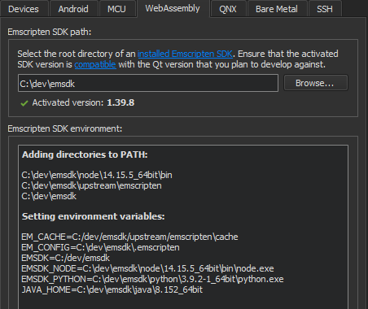
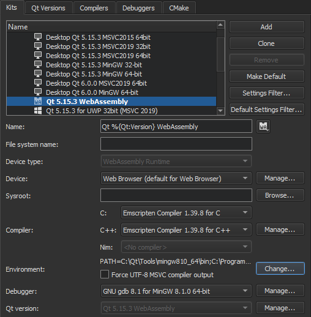
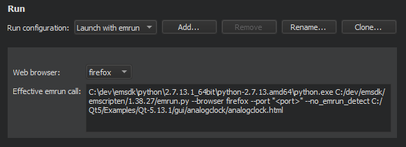

Building Applications for the Web
WebAssembly is a binary format that allows sand-boxed executable code in web pages. This format is nearly as fast as native machine code, and is now supported by all major web browsers.
Qt for WebAssembly enables building Qt applications so that they can be integrated into web pages. It doesn't require any client-side installations and reduces the use of server-side resources.
The experimental WebAssembly plugin enables you to build your applications in WebAssembly format and deploy and run them in the local web browser. You can change the web browser in the project's run settings.
Note: Enable the WebAssembly plugin to use it.
To build applications for the web and run them in a web browser, you need to install Qt for WebAssembly and the tool chain for compiling to WebAssembly.
Requirements
You need the following software to build Qt applications for the web and run them in a browser:
- Qt for WebAssembly 5.15, or later
- On Windows: MinGW 7.3.0, or later
- emscripten tool chain for compiling to WebAssembly
Setting Up the Development Environment
You need to install and configure Qt for WebAssembly and the tool chain for compiling to WebAssembly. Qt Online Installer automatically adds a build and run kit to Qt Creator.
Setting Up Qt for WebAssembly
To set up Qt for WebAssembly:
- Use Qt Maintenance Tool to install Qt for WebAssembly and, on Windows, MinGW (found in Developer and Designer Tools).
- Check out a known-good Emscripten version supported by the Qt for WebAssembly version that you installed, and install and activate
emscripten, as instructed in Install Emscripten.
Specifying WebAssembly Settings
To configure Qt Creator for building Qt apps for the web:
- Select Preferences > Devices > WebAssembly.
- In the Emscripten SDK path field, enter the root directory where
emsdkis installed. - Qt Creator configures the Emscripten SDK environment for you if the
emsdkis supported by the Qt for WebAssembly version that you will use for developing the application.
- Select Preferences > Kits.

- In the Compiler group, Emscripten Compiler should have been automatically detected for both C++ and C. If not, check that emscripten is set up correctly.
Adding WebAssembly Kits
The Qt for Web Assembly installation automatically adds build and run kits to Qt Creator. To add kits:
- Select Preferences > Kits > Add.
- In the Name field, specify a name for the kit.
- In the Run device type field, select WebAssembly Runtime. The value of the Device field is automatically set to Web Browser.
- In the Compiler field, select Emscripten Compiler for both C and C++.
- Select Apply to add the kit.
Running Applications in a Web Browser
To run a project:
- Open a project for an application you want to run in a web browser.
- Select Projects > Build & Run, and then select the WebAssembly kit as the build and run kit for the project.
- Select Run to specify run settings.
- In the Web browser field, select the browser to run the application in.

You can now build Qt applications in WebAssembly format and run them in a web browser as described in Build for many platforms and Run on many platforms.
See also Enable and disable plugins.